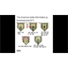

<html lang="en">
 <head>
<!-- Favicon -->
<link rel="shortcut icon" href="../../favicon.ico">
  <meta charset="utf-8"/>
  <title>
   AGENDA 21: A Letter From a Veteran Answered (RichieFromBoston)
  </title>
  <meta content="Post on /v/Conspiracy from 2020-06-25 by madmalloy." name="description"/>
  <meta content="AGENDA 21: A Letter From a Veteran Answered (RichieFromBoston)" property="og:title"/>
  <meta content="Post on /v/Conspiracy from 2020-06-25 by madmalloy." property="og:description"/>
  <link href="../../static/css/page.css" rel="stylesheet"/>
  <meta content="https://voat.conspiracy.hackliberty.org/thumbnails/8c/4c/8c4c372a-cc00-46a3-a867-2557d2a5ef96.png" property="og:image"/>
  <meta content="https://voat.conspiracy.hackliberty.org/v/conspiracy/3891936.html" property="og:url"/>
  <meta content="width=device-width, initial-scale=1" name="viewport"/>
  <link href="https://voat.conspiracy.hackliberty.org/v/conspiracy/3891936.html" rel="canonical"/>
  <meta content="article" property="og:type"/>
  <meta content="Voat /v/Conspiracy Archive" property="og:site_name"/>
  <meta content="en_US" property="og:locale"/>
  <meta content="summary_large_image" name="twitter:card"/>
  <meta content="AGENDA 21: A Letter From a Veteran Answered (RichieFromBoston)" name="twitter:title"/>
  <meta content="Post on /v/Conspiracy from 2020-06-25 by madmalloy." name="twitter:description"/>
  <meta content="https://voat.conspiracy.hackliberty.org/thumbnails/8c/4c/8c4c372a-cc00-46a3-a867-2557d2a5ef96.png" name="twitter:image"/>
 </head>
</html>
<body class="dark">
 <div id="container">
  <!-- array (
  'submissionid' => 3891936,
  'creationDate' => '2020-06-25 02:35:21',
  'domain' => 'bitchute.com',
  'formattedContent' => NULL,
  'isAdult' => 0,
  'isAnonymized' => 0,
  'subverse' => 'Conspiracy',
  'thumbnail' => '8c4c372a-cc00-46a3-a867-2557d2a5ef96.png',
  'title' => 'AGENDA 21: A Letter From a Veteran Answered (RichieFromBoston)',
  'url' => 'https://www.bitchute.com/video/piaCVIYKqlys/',
  'userName' => 'madmalloy',
  'archivedLink' => NULL,
  'archivedDomain' => NULL,
  'isDeleted' => 0,
) -->
  <div style="text-align:center; font-size:24px; font-weight:bold;">
   <a href="../../index.html" style="text-decoration: none; color: inherit;">
    Voat /v/Conspiracy Archive
   </a>
  </div>
  <div class="content" role="main">
   <div class="sitetable linklisting" id="siteTable">
    <div class="submission id-3891936 link type-text" id="submission-3891936">
     <a name="submissionTop">
     </a>
     <p class="parent">
     </p>
     <a class="thumbnail may-blank" href="https://www.bitchute.com/video/piaCVIYKqlys/" target="_self">
      
     </a>
     <div class="entry unvoted">
      <p class="title">
       <a class="title may-blank" href="https://www.bitchute.com/video/piaCVIYKqlys/" tabindex="1" target="_self" title="AGENDA 21: A Letter From a Veteran Answered (RichieFromBoston)">
        AGENDA 21: A Letter From a Veteran Answered (RichieFromBoston)
       </a>
       <span class="domain">
        (
        <a href="https://archive.searchvoat.co/search.php?d=bitchute.com">
         bitchute.com
        </a>
        )
       </span>
      </p>
      <p class="tagline">
       submitted
       <time datetime="2020-06-25T02:35:21+00:00" title="06/25/2020 2:35:21 AM">
        2020-06-25T02:35
       </time>
       by
       <span class="userattrs">
        <a class="author may-blank" href="https://archive.searchvoat.co/search.php?u=madmalloy">
         madmalloy
        </a>
       </span>
      </p>
      <ul class="flat-list buttons">
       <li class="first">
        <a class="comments may-blank" href="https://archive.searchvoat.co/v/Conspiracy/3891936" rel="nofollow">
         2 comments
        </a>
       </li>
      </ul>
     </div>
     <div class="child">
     </div>
     <div class="clearleft">
     </div>
    </div>
    <div class="clearleft">
    </div>
   </div>
   <div class="horizontal-line">
   </div>
   <div class="commentarea">
    <div class="sitetable nestedlisting" id="siteTable">
     <div class="child id-24440911 comment even" style="">
      <div class="entry unvoted">
       <div class="noncollapsed" id="24440911" style=";">
        <p class="tagline">
         <a class="author may-blank" href="https://archive.searchvoat.co/search.php?u=Quasiman">
          Quasiman
         </a>
         <span class="userattrs">
         </span>
         <time datetime="2020-06-25T06:45:40+00:00" title="6/25/2020 6:45:40 AM">
          2020-06-25T06:45
         </time>
        </p>
        <div class="usertext-body may-blank-within" id="commentContent-24440911">
         <div class="md">
          <p>
           <blockquote>
            <p>
             Yeah .. we do astrology here it sounds like a Pluto problem as well rejection occurs when planets are in signs inimical to their true nature, which similarly breeds Asperger's Syndrome characterized by natives "trying to make friends."
            </p>
           </blockquote>
           <p>
            Whereas Venus in Aries the sign of its detriment where it is not a welcome tenant in the 11th house of friends, says such friendships as you make will be treacherous, which is just one example there are many others depending on houses, signs and planetary dignities.
           </p>
           <blockquote>
            <p>
             This is what bugs ppl they don't know what is going on and can't see why they are "
             <a href="https://www.youtube.com/watch?v=D_P-v1BVQn8">
              Alone Again Naturally
             </a>
             " a la Gilbert O'Sullivan .. one of those bad friends who was a notorious bludger turned up on my doorstep with a tale of homelessness and woe.
            </p>
            <p>
             I put him up for free a couple days then introed him to the LL who had a vacant apartment and assisted his moving in .. he was also a notorious bash artist and he tried his bs with me so I creamed him with a 12 inch Crescent Wrench, then had to get an ambulance for him just so's I didn't go under on
             <em>
              serious
             </em>
             charges.
            </p>
            <p>
             My Ma was a Satanist who took soil from a young murder victim's grave presumably to work an evil spell, my father presented me with the bodies of aborted twins after I had tried to dissuade mother's plan after she announced she was off to have an abortion .. bashings, abuse and floggings followed by eviction and homelessness, I waass a homeless vagabond at age 14.
            </p>
            <p>
             Ok you sound like you had it about the same and it is not surprising you took up with religion, in my case at about age 32 I had heard astrology might have some of the answers .. it has.
            </p>
            <p>
             I discovered that since you were born that just as your parents and other close relations fitted into yr horoscope as planets in various signs and houses, so will ppl who you meet there after fit into those same slots, thus ppl use the same abuse to me and get clouted in the gob.
            </p>
            <p>
             And unfortunately the only way around it is to basically keep to y'rself .. ok once you know these things then you can live your life accordingly, you know it is a natural state of affairs and just as you can identify adverse planetary causes so are you prepped to respond in the best way ..
            </p>
           </blockquote>
          </p>
         </div>
        </div>
        <ul class="flat-list buttons">
         <li class="first">
          <a class="bylink" href="https://archive.searchvoat.co/v/Conspiracy/3891936/24440911" rel="nofollow">
           link
          </a>
         </li>
        </ul>
       </div>
      </div>
      <div class="child id-24455456 comment odd" style="">
       <div class="entry unvoted">
        <div class="noncollapsed" id="24455456" style=";">
         <p class="tagline">
          <a class="author may-blank" href="https://archive.searchvoat.co/search.php?u=Quasiman">
           Quasiman
          </a>
          <span class="userattrs">
          </span>
          <time datetime="2020-06-26T05:08:36+00:00" title="6/26/2020 5:08:36 AM">
           2020-06-26T05:08
          </time>
         </p>
         <div class="usertext-body may-blank-within" id="commentContent-24455456">
          <div class="md">
           <p>
            <p>
             Hmmmmmn .. we're facing a readership crisis maybe another post will engender a little enthusiasm, read on :)
            </p>
            <pre><code> Dee doodee doom doom
 Seven little girls
 Sitting in the backseat
 Hugging and a kissing with Fred
 I said, why don't one of you
 Come and sit beside me
 And this is what the seven girls said,

 All together now, one, two, three
 Keep your mind on your driving
 Keep your hands on the wheel
 Keep your snoopy eyes on the road ahead
 We're having fun, sitting in the backseat
 Kissing and a hugging with Fred
 Dee doodee doom doom // [Seven Little Girls ~ Paul Evans &amp; The Curls](https://www.youtube.com/watch?v=ATfHb-egOek).
</code></pre>
            <p>
             Relationships with the opposite sex are described by the relationship between Mars and Venus in the natal chart, thus good aspects of either 60‎° or 120‎° will bring good relationships like Fred in the song above, while adverse aspects of 90‎° or 180‎° will produce strained relationships like the poor lonely critter driving..
            </p>
            <p>
             As you age so do the planets move from place to place and when the Mars / Venus connection has progressed from the badlands into good territory so indeed can love affairs take place, however when the transit or progression is over so is the love affair .. ppl go spare when this happens and all sorts of bad karma occurs when the try to repair the damage.
            </p>
            <p>
             Another thing you have to watch is the aspects between the Moon and Mars or Venus in the natal chart, thus similarly good aspects bring popularity and friendships while bad aspects bring indifference and separation.
            </p>
            <p>
             Imagine a chart with V&amp;M in opposition with the Moon in square 90‎° aspect to both bodies and you have someone who can't get along with anyone .. ppl who have multiple marriages or serial love affairs that never get anywhere are under the influence of the Virgo star sign.
            </p>
           </p>
          </div>
         </div>
         <ul class="flat-list buttons">
          <li class="first">
           <a class="bylink" href="https://archive.searchvoat.co/v/Conspiracy/3891936/24455456" rel="nofollow">
            link
           </a>
          </li>
         </ul>
        </div>
       </div>
      </div>
     </div>
    </div>
   </div>
  </div>
 </div>
<!-- Footer Section -->
<footer class="container-fluid mt-3">
  <p class="small mb-0">
    /v/conspiracy archive has 42504 posts and 159856 total comments.
    <a href="https://git.hackliberty.org/c0mmando/voat-conspiracy-archive/">source code</a>.
  </p>
</footer>

<script src="../../static/js/jquery-3.7.1.slim.min.js"></script>
<script src="../../static/js/comments-toggle.js"></script>

</body>
